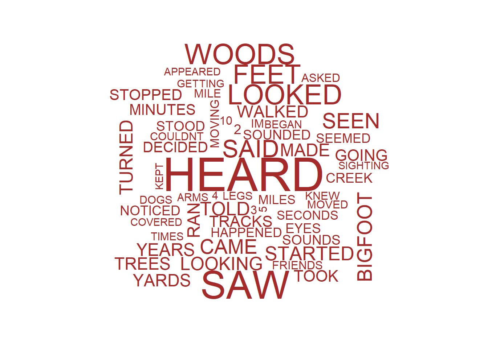

Included in our data set, we are lucky enough to have the full description of each Bigfoot encounter. Through Natural Language Process, we can study the commonalities between sightings. In the following code, we split each description, remove the 3,000 most common words, and keep a running total of each word. Additionally, we find the frequency of bi-grams.
library(readxl)
library(httr)
library(dplyr)
library(hunspell)
#Grab data
dat <- read.csv("bfro_reports_geocoded.csv")
#Build up data frames for uni and bi-grams
charfreq <- data.frame(NULL)
charfreq[1,1] <- NA
charfreq[1,2] <- NA
connections <- data.frame(NULL)
connections[1,1] <- NA
connections[1,2] <- NA
connections[1,3] <- NA
conndf <- data.frame(NULL)
conndf[1:100,1] <- NA
#Grab most common words
url <- "http://www.rupert.id.au/resources/4000-most-common-english-words-xlsx.xlsx"
GET(url,write_disk(common<-tempfile(fileext=".xlsx")))
common <- read_excel(path=common,sheet=1)
colnames(common) <- c("most")
common$most <- toupper(common$most)
#Send it through this massive for loop which cleans mispellings, dumbs down words to their roots, and calculate overall uni and bi grams
for (i in 1:nrow(dat)){
temp <- strsplit(toupper(as.character(dat[i,1]))," ")
if (length(temp[[1]])>0){
temp <- data.frame(temp)
temp[,1] <- gsub("[(),.!?`\'\"#-;]", "", temp[,1])
temp[,1] <- gsub("[[:punct:]]", "",temp[,1])
temp[,1] <- str_replace_all(temp[,1], "[^[:alnum:]]", "")
temp <- filter(temp,!is.na(temp[,1]))
temp <- filter(temp,temp[,1] != "")
colnames(temp) <- c("word")
temp <- anti_join(temp,common,by=c("word" = "most"))
temp <- filter(temp, word != "WAS" & word != "HAD" & word != "WERE" & word != "IS" & word != "BEEN" & word != "AN" & word != "WENT" & word != "GOT" &
word != "DID" & word != "DIDNT" & word != "ARE" & word != "DONT" & word != "WASNT" & word != "HAS" & word != "&" & word != "IM" &
word != "IVE" & word != "ARENT" & word != "THINGS" & word != "COUNLDNT" & !grepl("*HTTPS*",temp$word))
if (nrow(temp) > 0){
for( j in 1:nrow(temp)){
if (length(hunspell(temp[i,1]))[[1]]>0){
temp[j,1] <- hunspell_suggest(temp[j,1])[[1]][1]
}
if (length(hunspell_stem(temp[j,1])[[1]]) > 0){
temp[j,1] <- hunspell_stem(temp[j,1])[[1]][length(hunspell_stem(temp[j,1])[[1]])]
}
}
temp[,1] <- toupper(temp[,1])
colnames(temp) <- c("word")
temp <- anti_join(temp,common,by=c("word" = "most"))
temp <- filter(temp, word != "WAS" & word != "HAD" & word != "WERE" & word != "IS" & word != "BEEN" & word != "AN" & word != "WENT" & word != "GOT" &
word != "DID" & word != "DIDNT" & word != "ARE" & word != "DONT" & word != "WASNT" & word != "HAS" & word != "&" & word != "IM" &
word != "IVE" & word != "ARENT" & word != "THINGS" & word != "COUNLDNT" & !grepl("*HTTPS*",temp$word))
if (nrow(temp) > 1){
connfdf <- data.frame(NULL)
connfdf[1,1] <- NA
connfdf[1,2] <- NA
conntemp <- data.frame(as.character(temp[,1]))
for (l in 1:(nrow(conntemp)-1)){
temp2 <- c(as.character(conntemp[l,1]),as.character(conntemp[l+1,1]))
temp2 <- as.data.frame(t(temp2))
connfdf <- bind_rows(connfdf,temp2)
}
connfdf <- connfdf[-1,]
conndf <- connfdf %>% group_by(connfdf[,1],connfdf[,2]) %>% summarise(n=n())
for (k in 1:nrow(conndf)){
if ((!conndf[k,1] %in% connections[,1]) & (!conndf[k,2] %in% connections[,2])){
connections[nrow(connections)+1,1] <- conndf[k,1]
connections[nrow(connections),2] <- conndf[k,2]
connections[nrow(connections),3] <- conndf[k,3]
}
else {
index <- which((connections[,1] %in% conndf[k,1]) & (connections[,2] %in% conndf[k,2]))
connections[index,3] <- connections[index,3] + conndf[k,3]
}
}}
temp <- temp %>% group_by(temp[,1]) %>% summarise(n = n())
temp <- filter(temp,temp[,1] != "")
if (nrow(temp) > 0){
for (j in 1:nrow(temp)){
if (!temp[j,1] %in% charfreq[,1]){
charfreq[nrow(charfreq)+1,1] <- temp[j,1]
charfreq[nrow(charfreq),2] <- temp[j,2]
}
else {
index <- which(charfreq[,1] %in% temp[j,1])
charfreq[index,2] <- charfreq[index,2] + temp[j,2]
}
}
}
}
}
}We first take a look at the 20 most common words:
## Word Frequency
## 1 HARE 7293
## 2 DAIS 3223
## 3 BIGFOOT 2525
## 4 ACME 2477
## 5 DOLT 2316
## 6 LIME 2204
## 7 TUN 2187
## 8 DAME 2064
## 9 TOOK 1791
## 10 STOPPED 1681
## 11 MINUET 1554
## 12 CREEK 1419
## 13 STUD 1416
## 14 ROVE 1117
## 15 COULDN'T 1110
## 16 VAMP 1036
## 17 GEL 989
## 18 SIFT 943
## 19 RAM 905
## 20 HONE 891For a faster glance at the data, we check the following word cloud:
#Plot wordcloud
library(wordcloud)
cloud <- filter(charfreq,Frequency > 780)
wordcloud(cloud$Word,cloud$Frequency,color="brown")
From just the top 20 words, and the word-cloud we can start to make some general characterizations about sightings:
hunspell’s spell check, and root word finder, the people who have Bigfoot sightings end up being very aristocratic. Most survivors seem to be nobility (DAIS [#2], a throne), and are oddly worried about missing their stately balls (MINUET [#11]). Most sightings seem to occur to well stocked hunting parties (TUN [#7] a cask of wine, LIME [#6] for gin and tonics), trying to catch HARE’s [#1] and roadrunners (ACME [#4]) for dinner.Similarly, we check the most common bi-grams:
## First.Word Second.Word Frequency
## 1 NICHE NICHE 133
## 2 HID GEL 87
## 3 1 1 35
## 4 GUISE BUMP 31
## 5 GAD BIN 23
## 6 NOVEMBER HT 16
## 7 NEVADA CALIFORNIA 15
## 8 SPARSE POPULATE 15
## 9 HARRY HENDERSON 15
## 10 N SILL 15
## 11 COYOTE COUGAR 12
## 12 SNAPPING TWIG 12
## 13 STEIN COURTNEY 12
## 14 GRUE LOUR 11
## 15 SAN FRANCISCO 11
## 16 CHIDE TOAD 10
## 17 WASHINGTON STATES 9
## 18 HOLLOW HOLLOW 9
## 19 ABOMINABLE SNOWMAN 9
## 20 CL ELM 9Again, we notice interesting things right away:
We can also create a network diagram from these bi-grams:
#Build out a network plot from bigrams
library(networkD3)
connections <- filter(connections,Frequency > 3)
simpleNetwork(connections,zoom = T)Although our network is relatively sparse, we notice more information from the reports. For instance, the link \(\text{MOMENTARILY} \Leftrightarrow \text{STOPPED} \Leftrightarrow \text{WHEELER} \Leftrightarrow \text{BROTH}\) implies that Bigfoot is a connoisseur of soups. We also notice \(\text{FOOTHILL} \Leftrightarrow \text{SIERRAS} \Leftrightarrow \text{GEOLOGIST} \Leftrightarrow \text{PREFERRED} \Leftrightarrow \text{VAMP}\), which can only mean people assume that geologists in the Sierra Madre mountains are vampires (not enough data for further study)
Beyond this, we need more sighting descriptions to give us a better network.